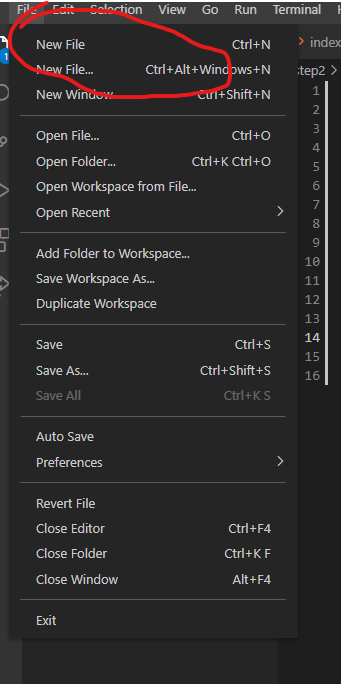

To prepare the files in your website you have to start by opening the file explorer in your operating system and make a folder with any name.
After you made the folder open vscode go to file >> open folder
After clicking open folder navigate to your folder you just made
After opening your folder make two new files named index.html and style.css like this:

name the first index.html then make the second file called style.css
Make sure that your navigation bar on the left looks like this:
You've now prepared your files for your website